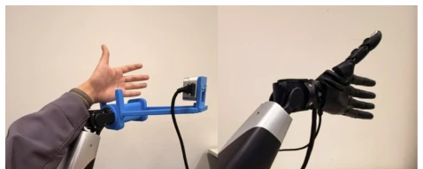
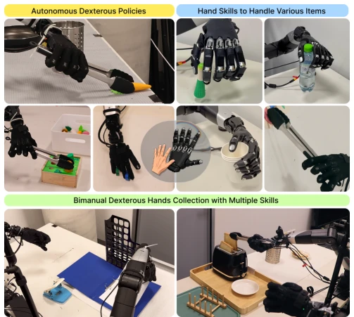
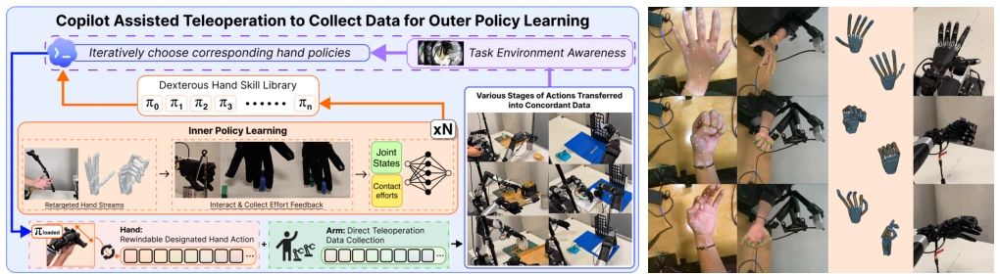
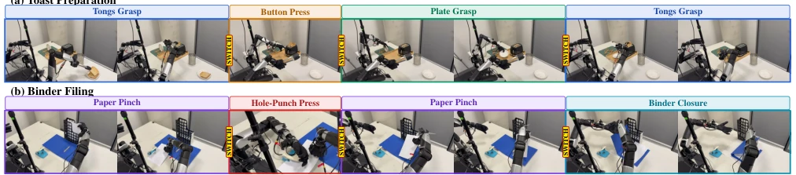
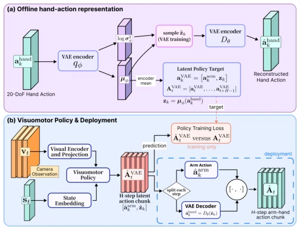
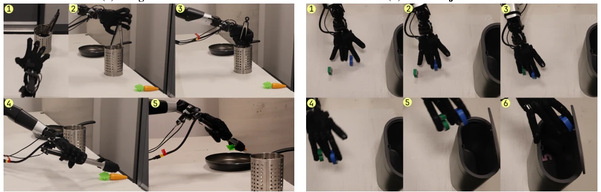
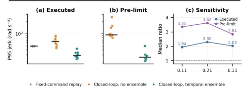
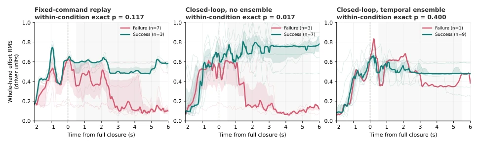
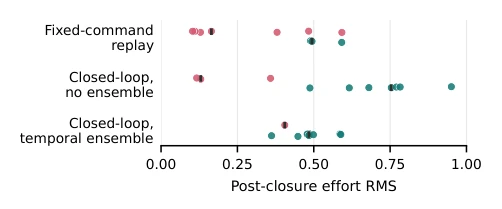
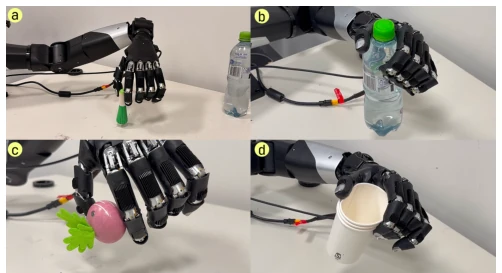

This NestDex work opens a 'cheat code' for data collection in dexterous manipulation. It does not attempt to let the operator directly control dozens of fingers, but instead creates an 'inner strategy' as a sparring partner, where the operator only needs to turn a clutch to control the progress. This 'nested' design is indeed clever, decoupling the high-dimensional hand coordination problem and allowing humans to focus on macro task planning. However, to be frank, during deployment the inner strategy is directly discarded, betting all on the outer strategy; if the outer strategy hasn't learned contact adaptation, those proprioceptive advantages of the inner strategy are wasted, after all the inner strategy is state-conditioned while the outer is visual. However, the experimental data is indeed solid, demo success rates significantly outperform the baseline, proving this 'sparring partner' mode has extremely high cost-effectiveness in the data collection phase, worth promoting in specific scenarios. It demonstrates how to exchange minor hardware modifications (such as a clutch) for huge improvements in data quality, which is a pragmatic choice in engineering.
The core bottleneck of dexterous manipulation lies in data collection. Imitation learning relies on high-quality demonstrations [1], but dexterous hands involve multi-joint coordination, operators need to plan arm trajectories and finger contacts simultaneously, cognitive load is extremely high, leading to uneven data quality. Existing systems like AnyTeleop [4] can map hand postures, but still require operator fine coordination, leading to high demo failure rates and long duration, especially in multi-stage tasks. NestDex aims to automate fine-grained contact behaviors, allowing humans to focus on macro tasks, thereby lowering the collection threshold. This solves the problem of traditional teleoperation struggling to reproduce consistent trajectories in complex contact tasks, providing a more reliable data foundation for subsequent autonomous policy learning. Especially for tasks requiring fine contact, direct teleoperation often leads to trajectory drift due to hand fatigue, while NestDex ensures consistency of contact behavior through policy generation.

Fig. 8: AnyTeleop [4] baseline used for demonstration collection. The operator moves the leader arm while presenting the hand to the mounted observation camera (left); AnyTeleop maps the observed hand pose to the follower dexterous hand (right).
The overall process is divided into inner strategy training, assisted demonstration collection, and outer strategy learning. First, by redirecting human hand data through multi-view cameras, train a proprioception-based inner strategy, enabling it to generate finger actions based on contact history. During demonstration, the operator controls the robotic arm, adjusting the execution progress of the inner strategy via a 1-DoF clutch, and a vision-language model automatically switches skills based on task stages. Collected trajectories are used to train the outer strategy. The outer strategy uses H-VAE to compress 20-DoF hand actions into latent variables, combining visual input to predict action blocks. During deployment, the outer strategy directly decodes and outputs, no longer relying on the inner layer. H-VAE reduces action space dimensionality, making the policy easier to converge, while retaining the coordination structure of hand actions. Specifically, the inner strategy utilizes proprioceptive history to predict action blocks, supporting forward and backward operations. The outer strategy adopts a Transformer architecture, inputting vision and state, outputting arm and hand latent actions. This hierarchical design utilizes the contact adaptability of the inner strategy, while achieving end-to-end autonomous control through the outer strategy, avoiding complex scheduling during deployment.

Fig. 1: Overview of the capabilities evaluated with NestDex. Top left: autonomous outer-policy rollouts for Tongs Transfer and Dual-Object Transfer. Top right: one reusable inner policy produces coordinated hand configurations across varied items. Bottom: copilot assisted collection of bimanual Binder Filing and Toast Preparation demonstrations.

Fig. 2: NestDex system overview and inner-policy data collection. Left: retargeted hand-skill demonstrations train inner policies that assist complete-task teleoperation; the collected demonstrations then train an outer policy. Right: multi-view human-hand observations are retargeted to coordinated robot-hand configurations for inner-policy training.

Fig. 4: Copilot assisted teleoperation sequences for Toast Preparation and Binder Filing. Coloured borders and labels identify the active inner policy, while switch markers indicate automatic reselection after the preceding policy returns to zero execution index. Each sequence returns to a previously used policy when the corresponding hand skill is needed again.

Fig. 5: Hand action compression and outer-policy learning. (a) H-VAE encodes each 20-DoF hand joint-position command as a compact hand latent action and reconstructs the complete hand command through its decoder. (b) The outer policy predicts action chunks containing arm commands and hand latent actions; during deployment, the decoder converts each predicted hand latent action back to a follower-hand joint-position command.
Compared with AnyTeleop [4] on 6 tasks. NestDex demo success rate reaches 100%, AnyTeleop some tasks are 0%. Outer strategy success rate significantly improves on NestDex data, H-VAE further improves performance, indicating compressed representation is effective. Temporal ensemble ablation experiments show, compared to no ensemble, ensemble reduces action jerk (Jerk) by 2.3 times, contact is smoother. Hand effort analysis indicates, ensemble strategy maintains more stable force control after contact, reducing rigid collisions. These results validate the auxiliary value of the inner strategy in the collection phase, and the generalization ability of the outer strategy during deployment. Additionally, the introduction of H-VAE enables the outer strategy to learn effective hand coordination patterns even with limited demonstration data, which is particularly important for real-world data scarce scenarios.

Fig. 6: Autonomous outer-policy behaviours learned from copilot-collected demonstrations. The policies deploy independently of the inner policies used during collection. (a) The policy extracts the tongs, grasps the carrot with the tool, and transfers it to the pan. (b) The policy uses separate finger groups to grasp two blocks simultaneously and transfers both to the bin. Numbers indicate temporal order.

Fig. 7: Temporal ensembling ablation during bottle-grasp closure. Panels (a) and (b) show trial-level executed-command and pre-limit P95 jerk; black bars mark medians. Panel (c) shows the median ratio of Closed-loop, no ensemble to Closed-loop, temporal ensemble across filter windows. Lower values indicate smoother commands.

Fig. 9: Closure-aligned whole-hand effort across the 30 bottle-grasp trials. Successes and failures remain separate within each execution condition. Thin curves show trials, thick curves show the median, and shaded regions show the interquartile range when more than one trial is available. The grey interval marks 0.5 to 5.5 s after full closure.

Fig. 10: Trial-level post-closure effort from 0.5 to 5.5 s after closure. Points show trial medians; pink denotes failure, teal success, and black marks group medians.
其他图片Other Figures

Fig. 3: The inner policy produces different contact configurations across its four training objects: (a) green scallion toy, (b) water bottle, (c) radish toy, and (d) paper cup. The policy receives hand joint positions and efforts without object images or identities.